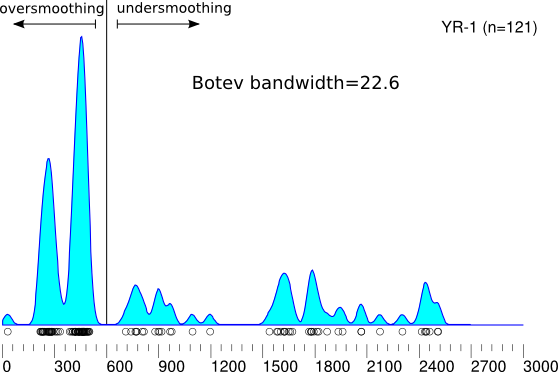
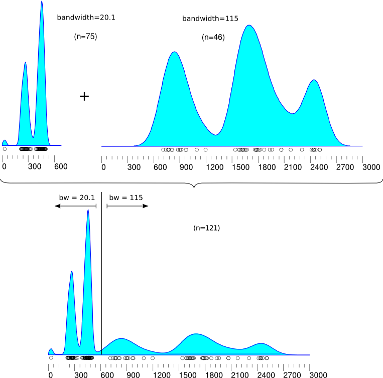

Frequently Asked Questions
1. Why does my KDE look so smooth/spiky?
Two possible reasons:
- DensityPlotter uses a single bandwidth for the entire distribution.
If the age distribution is characterised by clusters of ages as well as more sparsely
sampled intervals, then the former will tend to be over- and the latter undersmoothed.
A typical example of this would be a U-Pb age distribution with a sharp peak of
Phanerozoic ages, followed by a smaller number of Precambrian ages.
Adaptive KDE algorithms are the solution to this problem, but these
require large datasets (100s of ages) and are computationally very intensive.
- DensityPlotter uses the bandwidth selection algorithm of
Botev et al. (2010, Annals of Statistics). In rare occasions
(typically for small sample sizes), this algorithm fails to converge
and the program switches to an analytical default which tends to
oversmooth the data.
|
 |
2. Am I allowed to change the kernel bandwidth?
Yes! Kernel bandwidths are equivalent to histogram binwidths. Although
there are some rules of thumb for choosing the number of histogram bins
(e.g. √n or 1+log2(n)
for n = sample size), these do not always work for complex multimodal distributions.
In those cases it is often better to (subjectively) pick a better value.
Likewise, the bandwidth of a KDE can be changed as well.
3. How do I change the kernel bandwidth?
Simply click Options → Settings and choose your
preferred value. You could even divide your dataset into two parts
(young and old ages), create two KDEs and combine those in the
graphics program of your choice. This effectively mimics an adaptive
KDE.
|  |
4. What do the 'peaks' produced by the 'mixture models' mean?
The peaks are fitted with the algorithm of Galbraith and Green (1990,
Nuclear Tracks and Radiation Measurements), which was originally
developed for fission track dating but has also been adopted for U-Pb
dating by Sambridge and Compston (1994, EPSL). The underlying
assumption is that the peaks correspond to discrete events and
that the spread in the ages around these peaks is exclusively due to
the analytical uncertainty. This assumption is often correct for
fission track data but rarely so for U-Pb data. Nevertheless, the
peak locations and frequencies are often meaningful for U-Pb data as
well.
The annotations of the mixture models mark the maximum likelihood estimates
of the peak locations and their standard errors, as well as the frequency
contribution of the peaks and their standard errors.
Users suspecting that their ages do not correspond to discrete peaks
might want to check out the 'BayesMix' algorithm of Jasra et al.
(Mathematical Geology, 2006).
| |
{kind=link}
{kind=link}